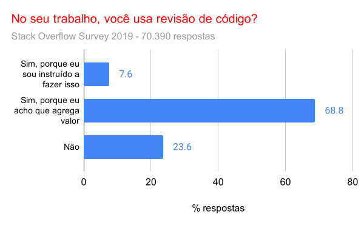
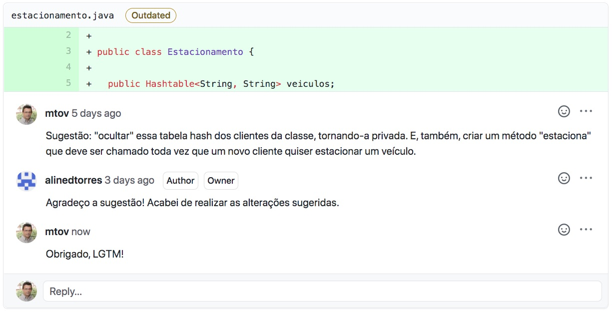
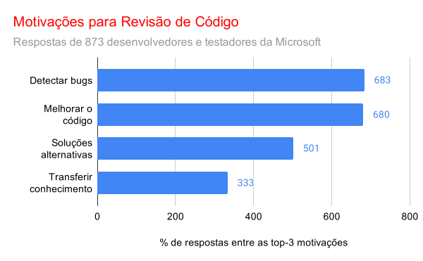
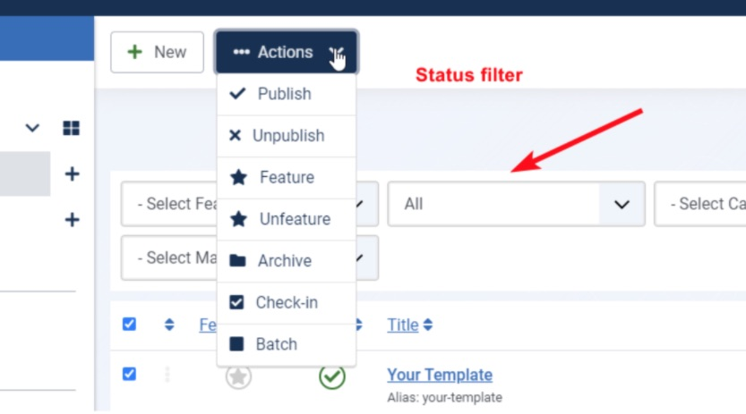

Engenharia de Software Moderna
1 Revisão de Código: Uma Breve Introdução
Artigo de autoria de Aline Torres e Marco Tulio Valente. Elaborado como parte da Monografia de Sistemas de Informação da primeira autora no DCC/UFMG.
1.1 Introdução
Revisão de código é uma das práticas mais importantes para garantir a saúde a médio e longo prazo da base de código de um sistema. Ela é hoje adotada por várias empresas que desenvolvem software. Por exemplo, o Stack Overflow Survey de 2019 incluiu uma pergunta sobre o emprego da prática (veja figura). Dentre os mais de 70 mil desenvolvedores que responderam a essa pergunta, apenas 23% não usavam revisão de código no seu trabalho (link).

A ideia de revisão de código é simples: todo código desenvolvido por um desenvolvedor tem que ser, em seguida, analisado por pelo menos um outro desenvolvedor, chamado de revisor. O revisor pode adicionar comentários no código sob revisão, procurando esclarecer dúvidas, sugerindo melhorias, indicando bugs, etc.
Assim, estabelece-se um diálogo
– na forma de uma troca de
comentários — entre o autor do código e o seu revisor.
Como resultado, o autor pode modificar sua implementação para atender a
alguma sugestão do revisor que ele achou procedente. Ou então, ele pode
replicar e justificar que ela não faz sentido… Espera-se que após esse
diálogo
o código seja aprovado pelo revisor e possa ser integrado
no repositório do projeto.
1.2 Pull Requests
Nesta seção, vamos apresentar um breve tutorial sobre como revisar código usando o recurso de Pull Requests (PR) do GitHub. Por meio desse recurso, desenvolvedores podem submeter código para ser integrado no repositório principal de um projeto. No entanto, antes da integração, o GitHub permite que outros desenvolvedores revisem esse código.
O exemplo a seguir usa a classe Estacionamento que já
foi usada no Capítulo 5 do
livro. Especificamente, vamos supor que uma autora criou um PR, no qual
ela sugere adicionar tal classe no sistema. Após isso, teve início o
processo de revisão, que você pode acompanhar também pela próxima
figura.
Comentário 1: o revisor comentou que alguns atributos da classe
Estacionamentopoderiam ser privados. E sugeriu também implementar um métodoestacionapara mediar o acesso a eles.Comentário 2: a autora concordou com a sugestão do revisor e atualizou o seu código com a modificação sugerida.
Comentário 3: o revisor aprovou o PR. A mensagem LGTM significa Looks Good to Me. Então, o PR pode ser integrado no branch principal do projeto. Isso pode ser feito pela própria autora, caso ela tenha permissão de escrita nesse branch.

1.3 Motivações
Em 2013, Alberto Bacchelli e Christian Bird realizaram um estudo sobre revisão de código com 873 desenvolvedores e testadores da Microsoft (link). A próxima figura ilustra as principais motivações para realização de revisão de código, na opinião dos participantes do estudo.

Conforme respondido pelos participantes, a principal motivação é encontrar bugs no código submetido. Porém, outros fatores também são importantes, como (1) melhorar o código, (2) propor soluções alternativas e (3) transferir conhecimento. Esse último benefício pode ocorrer nos dois sentidos, isto é, o autor pode aprender com os comentários do revisor e vice-versa.
Apenas reforçando o terceiro ponto acima, revisão de código tem um
benefício importante que é evitar a formação de ilhas de
conhecimento
em um projeto. Em vez disso, ela ajuda a socializar o
conhecimento sobre o código e a criar uma cultura de colaboração e troca
de ideias entre os membros do time.
1.4 O que Revisar?
Segue uma lista de questões que devem ser apontadas e consideradas em revisões de código:
- Bugs em geral
- Código mais complexo do que o necessário
- Código que usa um algoritmo e/ou estrutura de dados menos eficiente
- Código que viola princípios de projeto (veja mais no Capítulo 5)
- Código que viola a arquitetura de camadas do sistema (veja mais no Capítulo 7)
- Código que não trata exceções e erros
- Código com code smells (veja mais no Capítulo 9)
- Otimizações prematuras
- Ausência de testes
- Ausência de documentação, principalmente aquela mais relevante
- Falhas de segurança ou privacidade
- Problemas de desempenho
- Problemas de usabilidade com o usuário
- Uso inadequado ou sub-ótimo de APIs
- Uso de bibliotecas ou frameworks não autorizados
- Problemas relacionados com alocação de memória dinâmica
- Problemas relacionados com programação concorrente
- Código com problemas de leiaute ou indentação
- Código que viola convenções de nome
1.5 Recomendações para Revisores
Nesta seção, vamos listar algumas recomendações sobre como se
portar
em uma revisão de código.
Para chegar até elas, partimos do artigo How to Give Respectful and Constructive Code Review Feedback, de autoria de Michaela Greiler (link). Em seguida, fizemos uma análise de mais de 120 PRs de projetos de código aberto, hospedados no GitHub, buscando por casos concretos de comentários que seguem as recomendações que coletamos inicialmente. Ao todo, analisamos pelo menos 259 comentários para selecionar os exemplos que iremos mostrar a seguir.
Recomendações Genéricas
Vamos começar com algumas recomendações genéricas:
Revisores sempre devem lembrar que o objetivo da revisão é detectar problemas inequívocos no código submetido. Por exemplo, é natural que o revisor pudesse ter optado por resolver o mesmo problema de um modo diferente… Porém, a revisão não é para propor alternativas que não tenham vantagens claras e inequívocas. Ou seja, um revisor somente deve propor uma alternativa se ela for, de fato, bem melhor!
Na linha da recomendação anterior, evite comentários subjetivos e relacionados a estilos pessoais. Um exemplo são nomes de variáveis. A não ser que o nome de uma variável seja muito ruim, recomenda-se não iniciar um debate sobre ele.
Em suas revisões, nunca use palavras ofensivas, sarcásticas ou mesmo irônicas. Em vez disso, seja sempre educado e profissional.
Sempre restrinja seus comentários ao código que foi submetido e evite tratar de assuntos pessoais ou de outras questões.
Recomendações Específicas
Seguem agora algumas recomendações mais específicas:
Nos seus comentários, procure fazer perguntas e não julgamentos. Segue um exemplo de pergunta real feita por um revisor de um dos projetos que estudamos: Is this actually used? Or is it something necessary to make the template magic work?
Se você tiver feito um comentário errado ou sem sentido, reconheça o seu erro e agradeça, como no seguinte exemplo: Ah, I see the point. Thanks for your explanation.
Sempre que possível, use emojis, pois eles deixam a linguagem mais coloquial e amigável.
Sempre que for esclarecedor, referencie a documentação interna ou externa ao projeto. Isso vai ajudar a embasar seus comentários, como neste exemplo: [a given feature] allows id as in [URL]
Não deixe de elogiar o código submetido, se achar que ele possui um nível de qualidade superior, como neste caso: Thanks for the clear test instructions.
Se necessário, use imagens e screenshots para explicar sua dúvida. Veja um exemplo na próxima figura. Por meio dela, o revisor quis deixar claro que o código submetido poderia ter um comportamento errado quando um determinado filtro fosse definido como All.

Procure justificar os seus comentários quando a motivação não for clara ou quando o autor do código for um desenvolvedor júnior. Veja um exemplo: Sugiro trocar o ArrayList de Aluno por um HashMap<String, Aluno>, porque aí podemos verificar de forma mais eficiente se um determinado Aluno está presente na sua turma….
Sempre que for razoável, use o pronome
nós
ou a expressãoa gente
, em vez de usar o pronomevocê
, pois assim você deixa claro que estão – autor e revisor – trabalhando juntos. Por exemplo, em vez de dizer, será que você não poderia tornar esse atributo privado?, você pode perguntar: será que a gente não poderia tornar esse atributo privado?Por último, mas não menos importante, se você tiver uma divergência muito forte em relação ao código submetido (por exemplo, se achar que está tudo errado…) ou se a troca de comentários não estiver convergindo para aprovar o PR, tente agendar uma reunião com o autor para expor sua visão e tentarem chegar a um consenso. Porém, essa interação síncrona deve ser uma exceção e reservada para casos mais importantes.
1.6 Recomendações para Autores
Os autores também devem ser profissionais e educados em suas respostas. Eles devem entender também que revisão de código não é um exame de proficiência. Ou seja, como autor, não leve a revisão para o lado pessoal e nunca imagine que o revisor está julgando sua competência.
Outro ponto muito importante é que os autores devem submeter PRs pequenos, caso queiram obter uma resposta rápida e mais proveitosa dos revisores. Por exemplo, os autores do livro Software Engineering at Google, recomendam que um PR deve ter no máximo 200 linhas de código.
Se PRs forem muito grandes, existe também a chance de a qualidade da revisão cair muito, como sumarizado no tweet deste engenheiro de software:
Ask a programmer to review 20 lines of code, they’ll find 7 issues. Ask them to review 500 lines & they’ll find 0 issues. — Hays Stanford (@haysstanford) March 10, 2021
1.7 Automatizando a Revisão
Antes de concluir, gostaríamos de comentar que diversos
problemas
tratados em uma revisão de código podem ser detectados
de forma automática por meio de ferramentas de análise
estática. Por exemplo, questões como convenções de nomes de
identificadores (camel case, snake case, etc), leiaute
de código e estilo de indentação (tab ou espaços, por exemplo) podem ser
padronizadas por meio de linters. Com isso, evita-se
que um revisor humano tenha que perder tempo com tais questões.
Exercícios
1. Qual a diferença principal entre revisão de código e programação em pares?
2. Descreva uma desvantagem de revisão de código.
3. Seja o seguinte código de uma classe Stack. Quais
comentários você faria caso fosse responsável pela revisão do código
dessa classe? Sugestão: existem quatro questões sobre esse código que
achamos que deveriam ser mencionadas em uma revisão.
Se preferir, você pode fazer sua revisão em um PR do GitHub. Ou seja,
abra um PR em um de seus repositórios com o código da classe
Stack. Se não sabe fazer isso, leia antes a seção sobre
Pull Requests do Apêndice
A. Esse procedimento pode parecer um pouco estranho, pois você
estará revisando um PR que você mesmo criou. Porém, nosso objetivo é
apenas simular, com fins didáticos, uma revisão de código.
import java.util.ArrayList;
import java.util.EmptyStackException;
public class Stack<T> {
private ArrayList<T> elements = new ArrayList<T>();
public int size = 0;
public int size() {
return size;
}
public boolean isEmpty() {
return (size == 0);
}
public void empilha(T elem) {
elements.add(elem);
size++;
}
public T pop() throws EmptyStackException {
if (isEmpty())
throw new EmptyStackException();
T elem = elements.get(size-1);
size--;
return elem;
}
}4. É possível adotar simultaneamente Revisão de Código e Desenvolvimento Baseado no Trunk (TBD)? Sim ou não? Justifique sua resposta. Se necessário, consulte a seguinte seção do livro texto para saber mais sobre TBD.
5. É possível adotar simultaneamente Revisão de Código e Integração Contínua (CI)? Sim ou não? Justifique sua resposta. Se necessário, consulte a seguinte seção do livro texto para saber mais sobre CI.
6. O seguinte link contém o código de uma função de um sistema de código aberto, chamado FitNesse, a qual é usada também em um dos exemplos do livro Clean Code. Se você ficasse encarregado de revisar o código dessa função, qual a principal observação que você faria?
7. Como você revisaria cada um dos trechos de código a seguir?
const yyyymmdstr = moment().format("YYYY/MM/DD");getUserInfo();
getClientData();
getCustomerRecord();
const locations = ["Austin", "New York", "San Francisco"];
locations.forEach(l => {
doStuff();
doSomeOtherStuff();
// ...
// ...
// ...
dispatch(l);
});Esses exemplos são do seguinte repositório que documenta boas práticas para escrita de código em JavaScript.
Voltar para a lista de artigos.